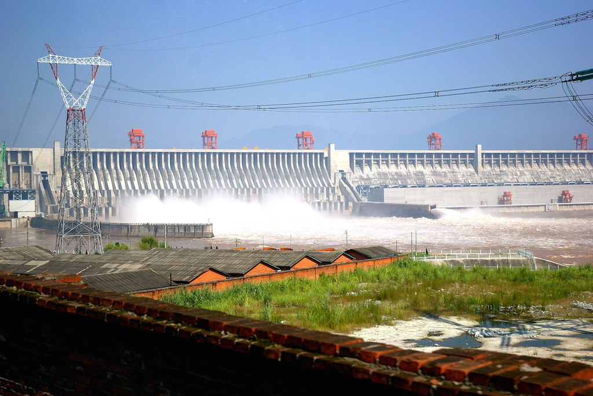
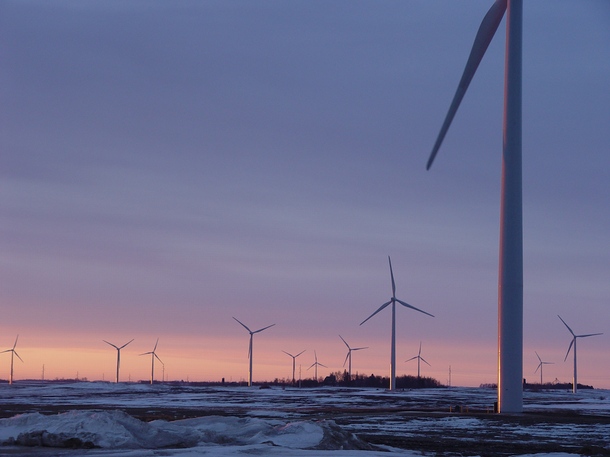

Renewable Energy: A quick overview
Energy and Future
Introduction
Renewable energy is a very good, reliable way of generating electricity without creating almost any pollution.
There are several major types of renewable energy sources:
The relative use of each type looks like this:
Hydro
Hydroelectric energy is a type of energy derived from the kinetic motion of water because of gravity. It accounts for around 81% of power generation of renewable energy, and it accounts for 16.3% of all electricity globally. Hydro electric power produced about 3503 Twh of electricity in 2014.
| A hydroelectric power plant |
|---|
|  |
.jpg){kind=link}
Wind
Wind power is a type of energy that works by generating energy from the wind. It accounts for about 13% of all electricity generated in renewable energy, and for about 2.82% of all energy generated globally. It generated about 550 TWh in 2014.
| A wind farm |
|---|
|  |
{kind=link}
Solar
Solar energy works by generating energy from the sun. It accounts for about 4% of energy produced of renewable energy, and for about 1.08% of all electricity generated globally. It generated about 189.5 TWh in 2014.
| A solar farm |
|---|
{kind=link}
Geothermal
Geothermal energy is a type of energy that is derived from heat inside the earth. It accounts for 2% of power generation of renewable energy, and it accounts for 0.54% of all the global energy generated. It generated about 79.7 TWh of electricity in 2014.
| A geothermal power plant |
|---|
 |
Sources
The following sources of information was used in creating this website:
- wikipedia
- google